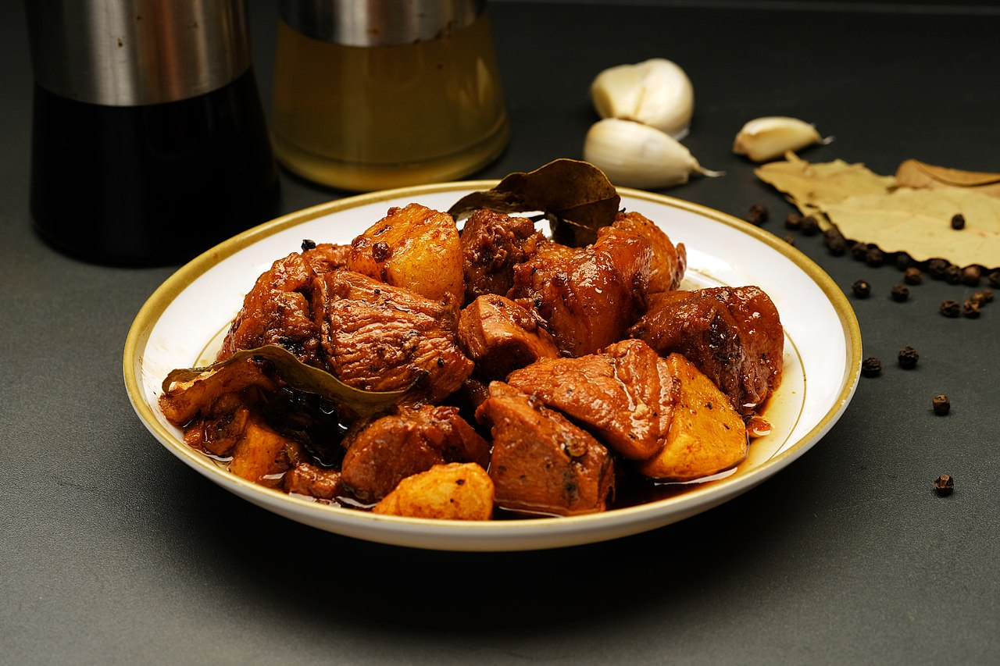

Adobo Recipes

Description
Adobo originated from the Philppines.
This version is inspired by Filipino pork adobo,
which relies heavily on vinegar, black pepper, and soy sauce.
Ingredients
- 1 kg Chicken
- 2 tbsp. virgin coconut oil
- 12 small yellow onions, each cut into 6 wedges
- 8 cloves garlic, smashed
- 1 tbsp. black peppercorns
- 1/2 tsp. kosher salt
- 2 bay leaves
- 1/4 tsp. MSG (optional)
Steps
- In a large pot over medium heat, heat oil. Cook onion, garlic, chile, if using, peppercorns, salt, and bay leaves, stirring occasionally, until garlic is lightly golden, 4 to 6 minutes.
- Drain pork; reserve marinade. Increase heat to high and add pork to pot. Cook, stirring occasionally, until pan is dry and pork is lightly caramelized, 17 to 19 minutes. Add reserved marinade and water and bring to a boil. Reduce heat to medium-low, cover, and simmer, stirring occasionally, until pork is very tender and can be cut with a spoon, about 1 hour.
- Uncover, increase heat to medium-high, and continue to simmer until sauce is thickened, about 5 minutes. Remove bay leaves. Stir in MSG, if using.
- Place rice on a platter. Top with pork and pour sauce over.